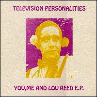
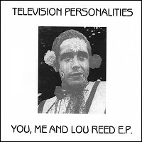

Television Personalities |
 1994 - Fantastic Plastic - FP003 - 12" Songs: You, Me And Lou Reed My Imaginery Friend I Remeber Bridget Riley I Wish You Could Love Me For What I Am Back Photograph by Alison Withers. Performed and perfumed by Daniel Treacy and Mr. Jowe Head Esq. On a chilly winter night in 1987 Daniel and Jowe jauntily and with gay abandon recorded these little treasures. The tapes were sadly mislaid until next six years to the day, when the good psychedelic fairies returned them safely to us. Now all you boys and girls can happily hear them time and time again thanks to the fairies and the nice irish people at Fantastic Plastic.
Recorded at Toe Rag studios, London, England. Thanks to Liam and all our
imaginery friends. |
 1998 - Little Teddy - LITE740 - 7" Songs: You, Me And Lou Reed My Imaginery Friend I Remeber Bridget Riley I Wish You Could Love Me For What I Am
Recorded at Toe Rag studios, London, England. Originally released as a 12"
EP on Fantastic Plastic. Thanks to Liam and all our imaginery friends. |